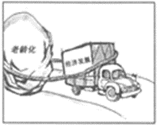
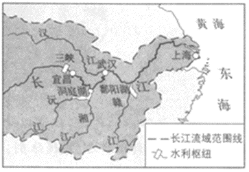
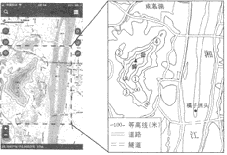

2018年北京市中考地理真题 · 选择题 第11、12、13、14、15题
 如图为我国1950﹣2010年每十年人口净增长统计图。据此，完成9～11题。
如图为我国1950﹣2010年每十年人口净增长统计图。据此，完成9～11题。

11.下列漫画中，能反映人口数量过多、增长过快带来的问题是（ ）ABCD 
长江中游的湖泊对长江水量有天然的调节作用。当干流洪水来临时，江水注入湖泊，削减洪峰；当千流水位低于湖泊时，湖水注入长江，增加水量。图示为长江流域部分地区示意图。读图，完成12、13题。12.图中（ ）
A.三峡蓄水时，宜昌河段水量增加
B.三峡放水时，宜昌河段流速变慢
C.洞庭湖流域发生旱灾时，江水入湖
D.鄱阳湖流域发生旱灾时，湖水入江
13.为发挥湖泊的调节作用，鄱阳湖和洞庭湖需要（ ）
①退耕还湖，增加湖区面积②周边绿化，保持水土
③防治污染，美化环境④围湖造田，扩大耕地
A.①②B.①③C.②③D.②④
“独立寒秋，湘江北去，橘子洲头……”（选自毛泽东《沁园春﹒长沙》）描写的是岳麓山周边的景观。如图为利用手机软件查找到的岳麓山周边电子地图及据此绘制的局部地区简图。读图，完成14～16题。

14.岳麓山山峰的海拔约为（ ）A.37米B.240米C.295米D.500米
15.在岳麓山不同地点欣赏周边风光，可以实现的是（ ）
A.①地—在山峰俯瞰湘江风光B.②地—在陡崖远眺湘江东岸
C.③地—在山谷遥望橘子洲头D.④地—在山脊观赏江湖水景